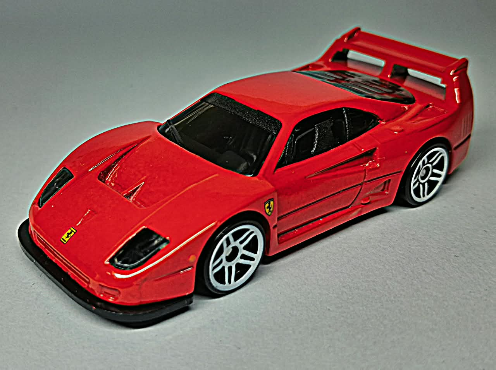

The Ferrari F40 Competizione was a more extreme, racing-focused evolution of the iconic F40, developed for GT competition. Its 2.9-litre twin-turbocharged V8 produced around 700 hp, although output varied between different cars. Lightweight composite bodywork, aggressive look, streamine aerodynamics, and a wide stance reflected its focus on speed and power rather than comfort. Built upon the legacy of Ferrari’s 40th-anniversary supercar, the Competizione became a formidable privateer racing machine and remains a celebrated example of Ferrari’s raw, analogue performance era.
This car is one of my favourites. I really love the proportions of this casting, especially the wing at the back, which adds to the aggressive look. I also found the wheels better than a lot of the other models. The interior is fine.
This car has a lot of character; it was the last car personally approved by Enzo Ferrari, the founder of Ferrari.
